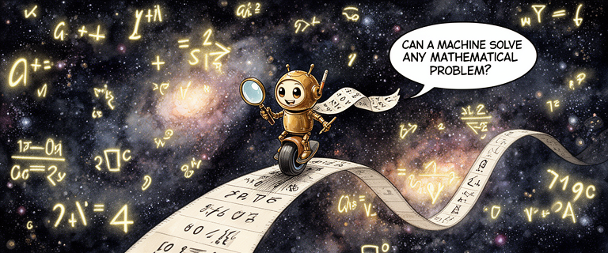
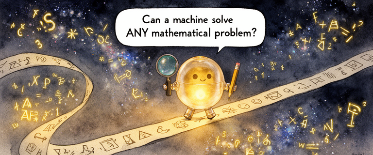
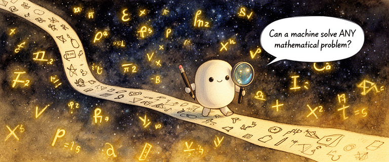
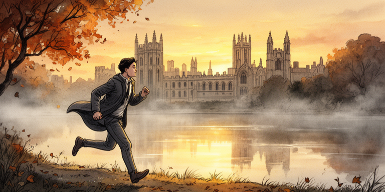
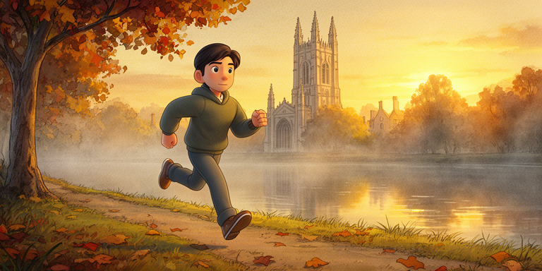
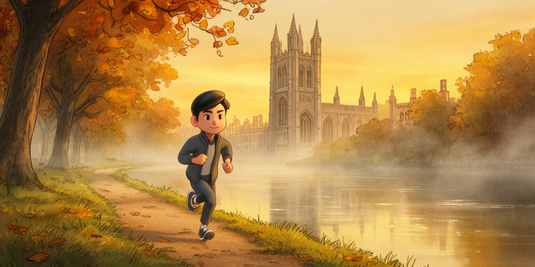
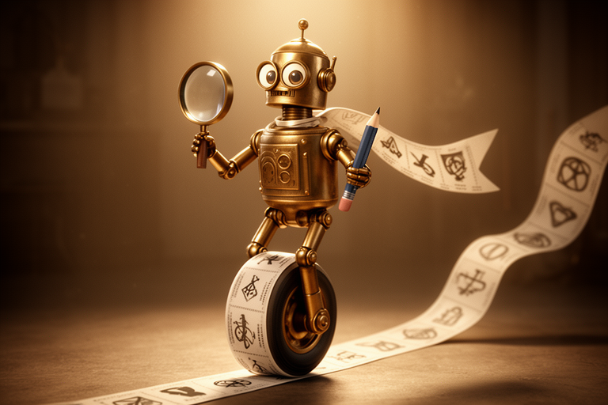
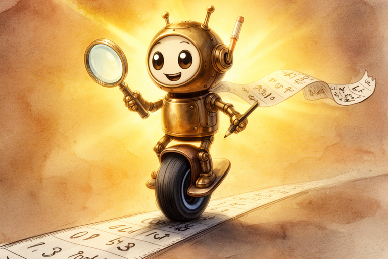
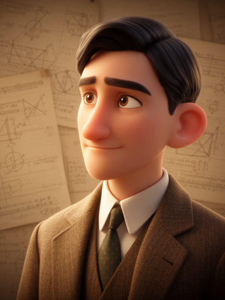
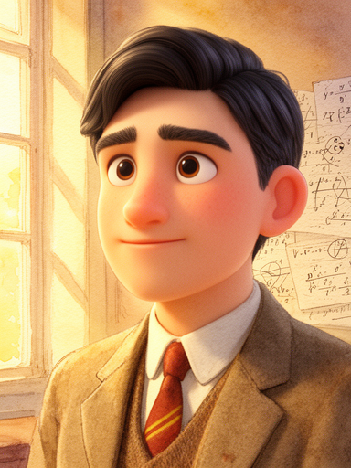

03 — Style Wars
Eight takes on
the same issue.
Issue 1 was rendered in eight completely different art styles. Same script, same panels, wildly different visual worlds. Each comparison shows the same scene — Scribble in the cosmos.

Ink + Watercolor

Warm Brass

Frosted Glass

White Matte
Turing running along the Cam — the scene that established each variant's mood. From ink-on-paper warmth to frosty translucence.

Ink + Watercolor

Warm Brass

Frosted Glass

White Matte
The 3D experiments took a completely different direction — full 3D rendering for both characters and environments.

Full 3D Rendered

Stylized 3D

Full 3D — Turing

Hybrid — Turing